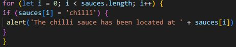
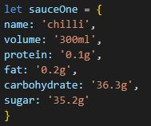
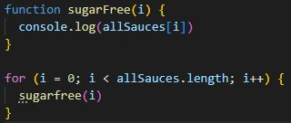

JavaScript: Theoretical Basics
JavaScript is one of the three building blocks of the modern Web, the other two being HTML & CSS. We're going to look at JavaScript, how it relates to the other building blocks, and the basic theoretical concepts behind how it works.
The Three Building Blocks
When an HTML loads the raw content of a Web page, CSS then gets applied to it to give it a nice presentation by perhaps resizing or colouring different elements of the page. Once the page is fully loaded, the work of HTML and CSS are done. All there is to do now is marvel at the result until we're ready to visit another page and have them whip up another masterpiece.
JavaScript is different, it doesn't sleep, its work is never done. JavaScript is why when you're on social media or reading the news, it increasingly isn't necessary to refresh the page to see the latest updates. They simply appear as they are available. JavaScript is the dynamic part of the web page, capable of changing HTML & CSS on the fly. For example, when there is an update to a breaking news story, JavaScript can tell the HTML to add another paragraph to the top of the page to present the new information.
Control Flow
Control flow is the technical jargon for the order in which code executes. JavaScript scripts execute in a simple manner from top to bottom, with a few very important exceptions. These exceptional cases are what give JavaScript the appearance of intelligence. Loops are one such exceptional case. Sometimes you want to do something multiple times, a good example of this is when you are searching for something.
Like a moderately organised person, I keep all of my sauces together in my cupboard. While I know where my sauces are, sometimes I don't know where a particular sauce is, or even if I have it at all. Similar situations arise in programming all the time. We can solve this problem of finding the chilli sauce through a loop which interrupts the normal control flow to pick up each of the sauce bottles in our pantry to see if it is the chilli sauce.

This demonstrates the kind of dynamism (and chilli) that JavaScript can bring to the table. It interrupts the normal control flow to run a search and if successful lets us know where the chilli sauce is located. We could do a lot more with such a loop, perhaps add an else statement specifying what to do if the chilli sauce isn't found.
Arrays, objects and functions
In the above example we searched an array of sauces called sauces to try to find the one we were looking for. An array is one way to store data in JavaScript, useful for when you have a simple list of items. If our data were to become more complex, for example if we wanted to store nutritional information about our sauces, an object might be a more convenient way to store that information.

Rather than being a simple list of items, objects take the structure of "key: value", and are like a list in themselves. If you're bold, you can even put objects inside of objects. Perhaps sauceOne is an object within another object called sauces which contains all of the other sauces and their nutritional information
Another important concept to consider is the concept of a function. A function is a reusable block of code - useful whenever we have code that we need to use multiple times. For example what if we have sugarfree variants of our sauces and need to change the sugar content of our sauce? Below is an example of such a function that would be useful when we're looping through our sauces:

Aside from being reusable, functions are also special because the code they contain execute only when the function is called. In the above example, the code within our function is only called once the function is called. Once it is called, the code is execute each time the loop calls it. It is another example of control flow in JavaScript.
The DOM
The DOM (Document Object Model) is a representation of an HTML document comprised of individual nodes. It is structured as a tree with branching nodes. For example, there will be a node for each <p> element, a node for each attribute, and a node for its text content. These give places where a scripting language, such as JavaScript, can insert itself and change the content or provide additional functionality.
The DOM is where HTML, CSS and JavaScript meet. It is the common ground constructed to give languages of various types - markup, stylesheet, programming - a place to interact and ultimately form the kinds of interesting and dynamic web pages we have come to expect. Without the DOM, JavaScript wouldn't have a representation of web pages. Which is to say, without the DOM, JavaScript would be useless for providing the kind of frontend interactive content that it is known for because it wouldn't understand what a web page is. With the DOM, Javascript can see a representation of the <p> tag in the HTML file and interact with it by say changing the text of the paragraph being displayed on the web page.